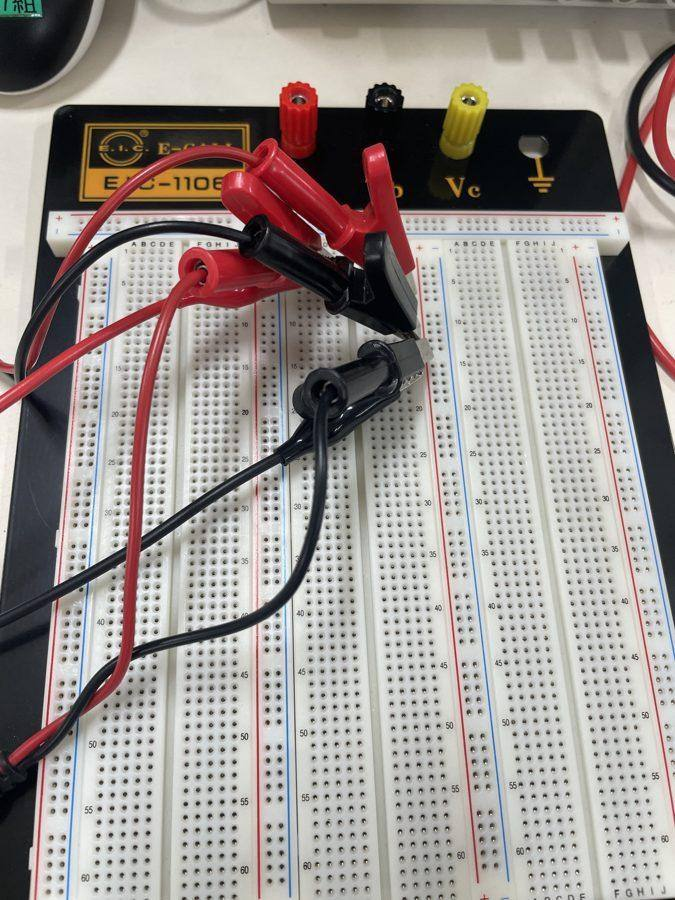
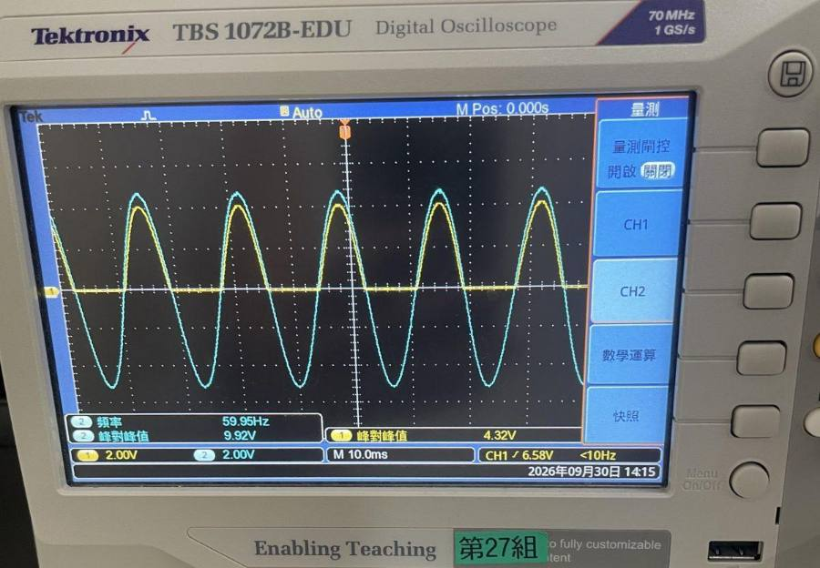
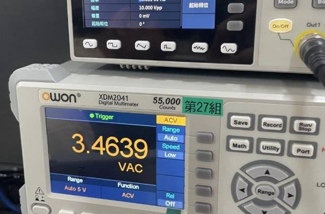
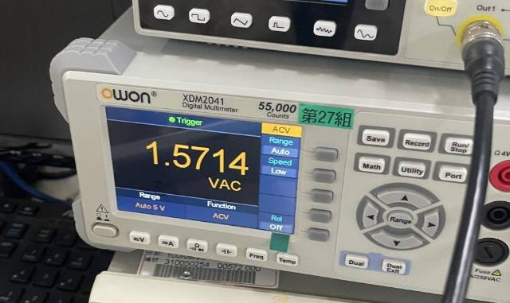
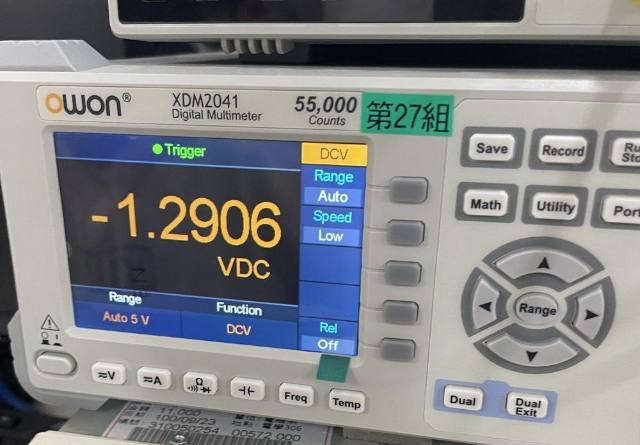
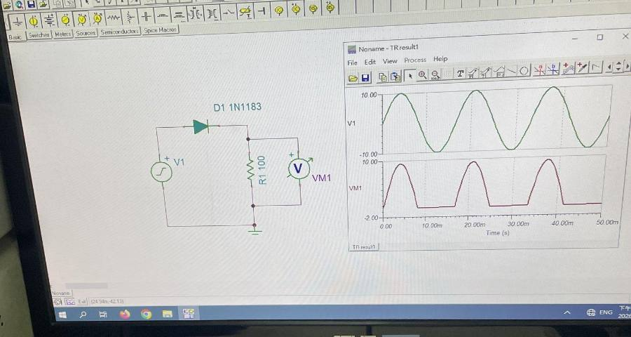
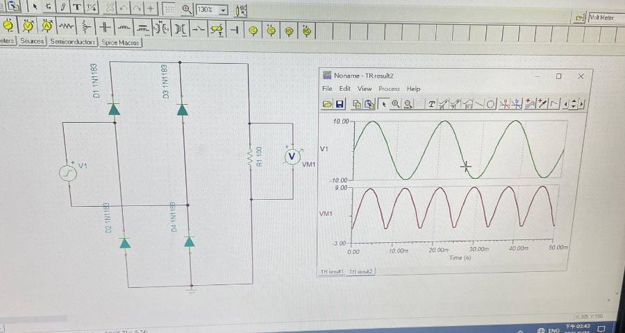

整流器：把交流變成只往一個方向
二極體這扇單向旋轉門，放進交流電裡就是整流器：半波砍掉負的、全波把負的翻上來。這一頁用你 9/30 量到的數據解一個謎：為什麼理論 1.59 V，你只量到 1.29 V？
19 個畫面看懂整流器THE STORY IN 19 SCENES
點畫面（或往左滑）前進，點左邊四分之一退回；也可以按「自動播放」。
這一頁怎麼讀PAGE MAP
講義 12 頁：p.2–8 原理、p.9 課堂實驗、p.10–12 PSpice。
p.2, p.4整流器做什麼；Vm、Vpp、Vrms、Vavgp.3半波整流、Vm/πp.5–8全波：中間抽頭、橋式、比較表p.9🔬 半波實驗 → 📈 你的數據p.10–12💻 PSpice 半波、橋式（Time Domain）- 公式都是理想二極體。Vm 只有 5 V 時，二極體的 0.64 V 不能忽略，平均會少約 20%（見 §2）。
- 課堂設 10 Vpp（峰值 5 V），PSpice 的 Vsin 設 VAMP = 10 V（峰值 10 V），兩者差一倍，波形高度不能直接比。
四個數字：峰值、有效值、平均值PEAK, RMS & AVERAGE
＝把來回跑的交流，變成只往一個方向。先認識一條正弦的四個數字：示波器看，電表 AC 檔看，DC 檔看。
從示波器讀值到電表讀值
- Vpp = 2Vm
峰對峰是從谷底量到山頂，兩倍峰值。你示波器讀 9.92 Vpp → Vm = 4.96 V。
- Vrms = √(平均的 v2) = Vm/√2
有效值＝跟多少直流一樣熱。sin2 的平均是 1/2，開根號就是 1/√2。
- 完整正弦：Vavg = 0
上下面積抵消。所以 DC 檔量交流讀 0，整流就是要讓它不是 0。
- Vpp = 2Vm = 2√2 Vrms ≈ 2.83 Vrms
這就是講義 p.9 的「回答：Vpp = ? Vrms」。10 Vpp → 3.54 Vrms。
把駝峰攤平：平均值是多高？
- V_m
- —
- V_rms
- —
- V_avg
- —
拿到一個正弦，四個數字怎麼換
- 示波器讀 Vpp → 除以 2 得 Vm。
- Vm ÷ √2 → Vrms（AC 檔應該讀到的）。
- 整流後的 Vavg：半波 Vm/π、全波 2Vm/π（DC 檔應該讀到的）。
常見錯誤
- ✗ 把 Vpp 當 Vm。✓ 10 Vpp 的峰值是 5 V。
- ✗ 0.45 Vrms 的 Vrms 是輸出的有效值。✓ 是輸入正弦的有效值。
- ✗ Vm/√2 對任何波形都成立。✓ 只對正弦；半波輸出的有效值是 Vm/2。
🧠 觀念填充 · 原理（不用算，用選的）
半波整流HALF-WAVE RECTIFIER
一顆二極體串一個電阻。正半週門打開，負半週門卡住：輸出只剩一排駝峰。二極體負半週要扛住 Vm（）。
一個駝峰攤平後多高
- 0～π：vo = Vm sin θ；π～2π：vo = 0
正半週順偏當短路，負半週逆偏當斷路（講義 p.3）。
- Vavg = (1/2π)∫0πVm sin θ dθ
平均＝一整個週期的面積 ÷ 2π，負半週面積是 0。
- ∫0πsin θ dθ = [−cos θ]0π = 2 ⟹ Vavg = 2Vm/2π = Vm/π
一個 sin 駝峰的面積剛好是 2。
- Vm = √2 Vrms ⟹ Vavg = √2/π Vrms = 0.45 Vrms
講義用 Vrms 寫的版本，市電（標有效值）直接代。
- 真實二極體：vo = Vm sin θ − Vγ，只在 α < θ < π − α
要先爬過 Vγ 才導通，所以峰值少 Vγ、導通也不到半圈。
- Vavg = [2Vm cos α − Vγ(π − 2α)]/2π
你的 Vm 4.96、Vγ 0.64：α = 7.4°，算出 1.27 V，你量 1.29 V。
二極體模型換一換：峰值和平均差多少
- 輸出峰值
- —
- 平均
- —
- 導通
- —
半波題目的標準流程
- 先求 Vm（Vpp/2 或 √2 Vrms）。
- 看 Vγ/Vm：小於 5% → 直接 Vm/π；不小 → 用 α 的公式。
- 峰值 Vm − Vγ；PIV = Vm。
常見錯誤
- ✗ 有壓降時平均 = (Vm − 0.7)/π。✓ 這假裝還導通 180°；Vm 小時會高估（你的例子 1.37 vs 1.27 V）。
- ✗ 除以 π 是因為半個週期。✓ 面積 2Vm ÷ 週期 2π＝Vm/π。
🧠 觀念填充 · 整流電路（不用算，用選的）
全波整流：中間抽頭與橋式FULL-WAVE RECTIFIERS
＝兩扇門輪流開，出口都在同一邊：負半週不砍掉，翻上來。用 2 顆，用 4 顆（最常用）。
從半波到全波
- vo = Vm|sin θ|
負半週也輸出正電壓，一個週期兩個駝峰。
- Vavg = (1/π)∫0πVm sin θ dθ = 2Vm/π
每 π 就重複一次，面積 2Vm ÷ π。是半波的兩倍。
- 中間抽頭：正半週 D1、負半週 D2
兩半邊線圈各負責一個半週（講義 p.6）。截止那顆兩端差 2Vm。
- 橋式：正半週 D1、D4，負半週 D2、D3
四顆排成菱形，電流永遠從同一端進負載（講義 p.7）。
- 橋式峰值 ≈ Vm − 2Vγ，PIV = Vm
每半週過兩顆，壓降兩倍；但不用中間抽頭、耐壓只要一半。
看哪幾顆二極體在導通
- 導通中
- —
- 峰值
- —
- 平均
- —
- PIV
- —
| 講義 p.8 | 半波 | 中間抽頭 | 橋式 |
|---|---|---|---|
| 二極體數 | 1 | 2 | 4 |
| 輸出平均 | 0.318Vm＝0.45Vrms | 0.637Vm＝0.9Vrms | 0.637Vm＝0.9Vrms |
| 漣波頻率 | fs | 2fs | 2fs |
| 二極體耐壓 | Vm | 2Vm | Vm |
| 加濾波電容後耐壓 | 2Vm | 2Vm | Vm |
全波題目的標準流程
- 認電路：兩顆＋中間抽頭，還是四顆菱形。
- 每半週過幾顆 → 峰值扣 Vγ 或 2Vγ。
- 平均 2Vm/π（Vm 小就用 α 的公式）；PIV 查表。
常見錯誤
- ✗ 中間抽頭的 Vm 是整個次級線圈。✓ 是半邊線圈的峰值。
- ✗ 橋式只扣一個 0.7 V。✓ 每半週過兩顆，扣 1.4 V。
- ✗ 全波漣波頻率還是 60 Hz。✓ 120 Hz，濾波會比較好濾。
🔬 實驗流程：半波整流LAB PROCEDURE
函數產生器 10 Vpp、60 Hz → 1N4002 → 1 kΩ。示波器看 V1、Vo；電表量 V1（AC）、Vo（DC）、二極體（DC）。
- 函數信號產生器正弦、60 Hz、10 Vpp、偏移 0
- 示波器（雙通道）CH2 看 V1、CH1 看 Vo
- 三用電表AC 量 V1、DC 量 Vo 與二極體
- 1N4002 ＋ 1 kΩ色環端＝陰極，朝 Vo
- 接線
產生器 + → 二極體陽極；陰極（色環）→ 1 kΩ → 地。Vo 取在電阻上。
- 設定產生器
正弦、60 Hz、10 Vpp、DC offset 0。先用示波器確認真的是 10 Vpp（你的是 9.92）。
- 示波器看波形
兩個通道都 DC 耦合、地線同一點；記 V1、Vo 的峰對峰值。
- 電表量三個值
V1 → AC 檔；Vo → DC 檔（平均）；二極體兩端 → DC 檔。
實驗時最常出包的地方
- ✗ 量 Vo 切到 ACV 檔。✓ 讀到的是交流成分不是平均（你的 1.5714 V 就是這樣）。
- ✗ 示波器用 AC 耦合看 Vo。✓ 波形會整條往下沉，看不出底部是 0。
- ✗ 示波器兩支探棒地線接不同點。✓ 地線是相通的，接錯等於把二極體短路。
🧠 觀念填充 · 實驗操作（不用算，用選的）
📈 結果：我的結報數據MY DATA
「我的實測」欄預設是你 9/30 結報的數字，改了會存起來，模擬跟著重算（模擬用你量到的 Vpp、1N4002、1 kΩ）。
模擬波形 vs 你的讀值
| 量測 | 理論（理想、10 Vpp） | 模擬（1N4002） | 我的實測 | 實測 vs 模擬 |
|---|
- 峰值 4.32 V：比輸入峰值 4.96 V 少 0.64 V，就是二極體壓降。模擬 4.31 V，幾乎一樣。
- 平均 1.29 V（由二極體 −1.29 V 推）：模擬 1.28 V，差 0.5%。結報寫的 (5 − 0.7)/π = 1.37 V 只扣了峰值、沒算導通角變短；完整公式是 1.27 V。
- 表 2 的 Vavg 那格要寫 1.29 V，不是 1.57 V：1.5714 是 ACV 檔讀到的交流成分（模擬 1.64 V）。
- V1 = 3.464 V：示波器 9.92 Vpp 換算是 3.51 V，差 1.3%，電表在 60 Hz 正常。
- 表 2 的「Vrms」那列如果是指 Vo 的有效值，理想值是 Vm/2 = 2.5 V（不是 3.54 V）；你的數據推得 √(1.292 + 1.572) = 2.03 V（請確認老師這列指的是哪個）。
📷 實驗照片（結報）







💻 PSpice：半波與橋式的 Vo 波形PSPICE TRANSIENT
Vsin：VAMP = 10 V（峰值，不是 Vpp）、FREQ = 60 Hz。分析選 Time Domain，Run to time 50 ms。
- New Simulation Profile → Time Domain (Transient)
講義 p.12。Run to time 50 ms（3 個週期），Maximum step 可設 0.05 ms 讓波形平滑。
- Vsin 參數
VOFF = 0、VAMP = 10、FREQ = 60。
- 放電壓探棒
V1 一支、Vo 一支；橋式的 Vo 是負載兩端的差（用差動探棒或 V(+) − V(−)）。
應該跑出來長這樣
名詞中英對照表GLOSSARY
符號———CT—VmVppVrmsVavg, VdcPIVfs, 2fs—PSpice